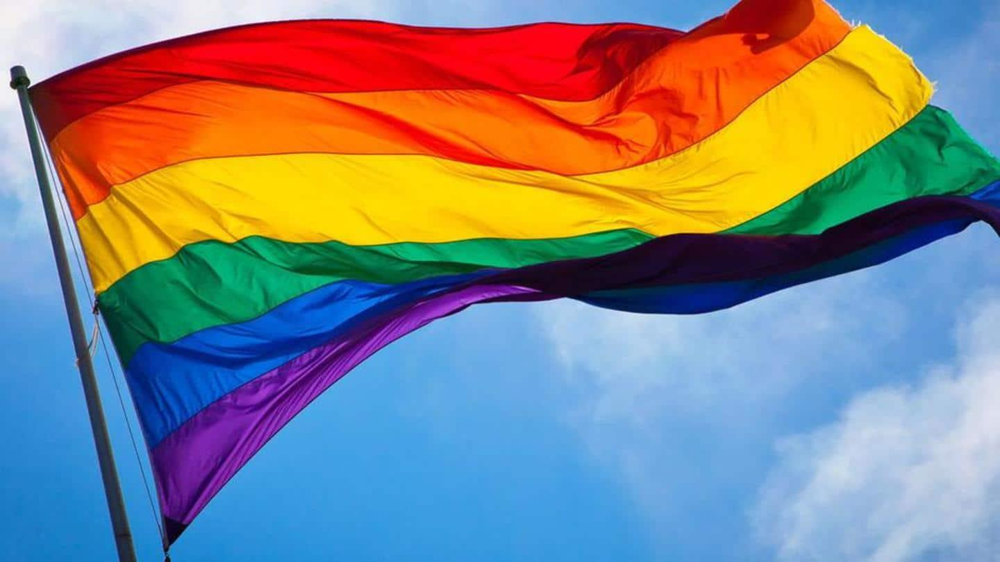

Scottish politician claims gay marriages caused COVID-19 pandemic
Scottish politician claims gay marriages caused COVID-19 pandemic

(MENAFN - NewsBytes) A Scottish politician has sparked outrage after claiming that the coronavirus pandemic has been caused due to gay marriages.
Peter Tait, who is contesting as an independent candidate from Shetland, recently said that the fatal virus is 'possibly related' to marriages among people of the same sex.
Tait made the flabbergasting statement in an interview with the Scottish newspaper The Shetland Times.
Here's more.
In this article 'I'm representing things God wants me to represent' Tait finished last of 10 candidates in 2019 by-election LGBTQ rights activists call out Tait's views 'He needs to climb back into his primeval hole' Similar claims were made by Ukrainian patriarch last year Statements 'I'm representing things God wants me to represent'
In the interview, Tait said his views were influenced by his religious beliefs.'I'm representing as best I can things that God would want me to represent (sic),' he told the paper.A retired mussel farmer, Tait revealed he would be standing against gay marriage for the Shetland MSP seat, adding, 'COVID is possibly related to it (sic).' Information Tait finished last of 10 candidates in 2019 by-election Earlier, in the 2019 by-election in Scotland, Tait had pledged to move the monarchy to the country if elected.However, he received a mere 31 votes, coming in last of 10 candidates. Reactions LGBTQ rights activists call out Tait's views Meanwhile, LGBTQ rights activists have called Tait an 'idiot' and his comments 'nonsensical.'His ridiculous belief that COVID-19 is a causation of gay marriage is not only a dangerous conspiracy theory but could propagate and incite hate of gay people and surely contravenes the Equality Act 2010 (sic),' Kerrie Meyer, the founder of ShetlandLGBTQ.org.uk, told the Daily Record . Quote 'He needs to climb back into his primeval hole' 'The Electoral Commission could take measures against Mr. Tait for promoting such a dangerous conspiracy theory and vile comments about gay marriage.In the meantime, he needs to climb back into his primeval hole,' Meyer was quoted as saying by the publication. History Similar claims were made by Ukrainian patriarch last year
This is not the first time that gay marriages have been blamed for the COVID-19 pandemic, that has already claimed the lives of 28.67 lakh people across the globe.Last March, Patriarch Filaret, who heads the Ukrainian Orthodox Church, had triggered outrage around the world after calling same-sex unions as 'the cause of the coronavirus.'Later in September, he tested positive for the virus. MENAFN08042021000165011035ID1101885815
Legal Disclaimer: MENAFN provides the information 'as is' without warranty of any kind.We do not accept any responsibility or liability for the accuracy, content, images, videos, licenses, completeness, legality, or reliability of the information contained in this article.If you have any complaints or copyright issues related to this article, kindly contact the provider above.
Posted On: 2021-04-08T15:24:44
Posted By: MENAFN
Content Date: 2021-04-08
Download Date: 2021-05-13
Document ID: L0C04C7KZ